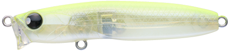
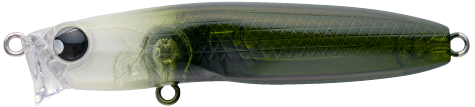
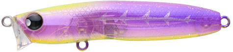
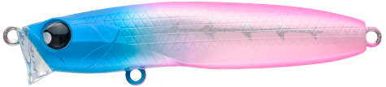

レクター71F
（RECTER71F）
レクター71F（RECTER71F）はPOP SEA CREW（ポップシークルー）のリップレスフローティングミノーです。
抜群の飛距離と極浅レンジで、どんなシャローも攻略。主なターゲットはシーバスです。
細身のリップレスフローティングミノー「RECTER」がギュッと小さくなって登場。小型ながら飛距離が出るので、広い範囲の水面直下を攻められます。

画像出典:POP SEA CREW公式HP
スペック
- メーカー
- POP SEA CREW（ポップシークルー）
- タイプ
- フローティング（リップレス）
- 全長
- 71mm
- 重量
- 6.4g
- フック
- #8
- リング
- #2
- アクション
- スローピッチゆらぎ
- レンジ
- 0〜10cm
- 価格
- 1,835円（税込）
▼今すぐチェック

レクター71Fの特徴
水面直下で起きる「スローピッチゆらぎアクション」
-
スローピッチゆらぎアクション
水面直下で発生するゆらぎアクションと絶妙な浮遊感で、スピードの遅いベイトを食べているシーバスを誘う。
-
流れの変化でゆらぎが大きくなる
流れの速いところから遅いところに入った時や、巻くスピードを緩めた瞬間に、水面直下でゆらぎがより大きくなってバイトを誘う。
-
小型でも飛距離が出る
水の抵抗や流れの変化をつかみやすい、ショートリップのようなヘッド形状。小型ながら飛距離が出る。
レクター71Fの使い方
基本はスローのただ巻きです。水面直下〜10cmをゆっくり引いて、ゆらぎアクションで誘います。
流れのある場所では、流れの強弱が変わるところを通したり、巻くスピードを緩めたりして、ゆらぎが大きくなる瞬間を作りましょう。
レクター71Fの得意な状況
水面で波にもまれながらゆらぐ弱ったベイトを演出したい時や、水面に浮き切らないベイトを食べているシーバスに効果的です。
レクター111Fより小さいので、小さめのベイトや、軽めのタックルで使いたい時に向いています。
ワンポイント
極浅レンジなので、浅い干潟や河川のシャローでも底を擦らずに引けます。
RECTERシリーズのサイズの使い分け
| モデル | 全長・重さ | レンジ・特徴 |
|---|---|---|
| RECTER71F（この記事） | 71mm・6.4g | 0〜10cm。小さめのベイトや軽めのタックルに |
| RECTER111F | 111mm・10.5g | 0〜10cm。バチ抜けからオールシーズン使える基本サイズ |
| RECTER131F BOLD | 131mm・25g | 0〜20cm。大きめのベイトやアップクロスからのドリフトに |
※数値は公式ページより。
オススメカラー
レクター71Fは全10色。そのうち4色を紹介します（画像は公式のカラーチャートより）。

#001 ハッピーレモンまず1つ選ぶならこの色。視認性の高いレモン系。

#004 ホワイトシェードクリアボディにダークな背中。シルエットを出しつつナチュラルに。

#007 KISARAGIパープル系の透け感のあるカラー。

#008 ブルピンシャドーボーンブルーとピンクのツートン。視認性の高いアピール系。
画像出典:POP SEA CREW公式HP
レクター71Fに似ているルアー
-
 レクター111F
ポップシークルー
詳細はこちら＞
レクター111F
ポップシークルー
詳細はこちら＞
同じシリーズの基本サイズ。
-
 シュリペン70
レガーレ
詳細はこちら＞
シュリペン70
レガーレ
詳細はこちら＞
バチ抜け・マイクロベイトに効く70mmのシンペン。
-
 ウィリップ87F
ポップシークルー
詳細はこちら＞
ウィリップ87F
ポップシークルー
詳細はこちら＞
同じポップシークルーのフローティングミノー。